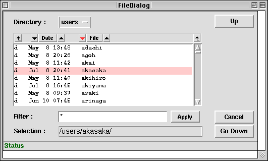
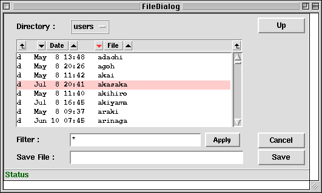

<!DOCTYPE HTML PUBLIC "-//W3C//DTD HTML 4.01 Transitional//EN">
<HTML lang="ja-JP">
<HEAD>
<META HTTP-EQUIV="Content-Type" CONTENT="text/html; charset=ISO-2022-JP">
<TITLE>KBFrame File Dialog</TITLE>
</HEAD>

<BODY BGCOLOR="White" TEXT="Black" LINK="Blue" VLINK="Teal" ALINK="Red">

<A NAME="top" HREF="index-ja.html">$BL\<!(B</A>
<A HREF=messagebox-ja.html>$B%a%C%;!<%8%\%C%/%9(B</A>
<A HREF=emmeas-ja.html>$BNc(B emittance$BB,DjCM7W;;MQ%Q%M%k(B</A>

<HR><DIV ALIGN="CENTER"><H2>$B%U%!%$%kA*BrMQ%@%$%"%m%0%\%C%/%9(B</H2></DIV><HR>

<P>KBFOpenDialog$B$H(BKBFSaveDialog$B$O!"%U%!%$%kL>$rA*Br!&;XDj$9$k$?$a$K;HMQ(B
$B$7$^$9!#$I$A$i$bBh0l0z?t$,=i4|%G%#%l%/%H%j$N@dBP%Q%9!"(B
$BBhFs0z?t$O%j%9%H%\%C%/%9$KI=<($9$k%U%!%$%kL>$K$+$1$k%U%#%k%?$G$9!#(B
$BJV$jCM$O!"(BCancel$B%\%?%s$,2!$5$l$?;~$O(BNull$B!"$=$l0J30$O%U%!%$%kL>$,(B
$B@dBP%Q%9$GJV$j$^$9!#(B</P>

<PRE><CODE>
FFS;
w = KBMainFrame["FileDialogExample", f, Title-&gt;"File Dialog Example"];
bo = Button[f,Text-&gt;"Open",Command:&gt;of[]];
bs = Button[f,Text-&gt;"Save",Command:&gt;sf[]];
of[] := (
  fn = KBFOpenDialog["/","*"];
  If [fn &lt;=&gt; Null, Print["Open file is "//fn]];
);
sf[] := (
  fn = KBFSaveDialog["/","*"];
  If [fn &lt;=&gt; Null, Print["Save file is "//fn]];
);
TkWait[];
</CODE></PRE>

<P></P>

<P></P>

<P><A HREF="#top">top</A></P>

<HR><ADDRESS>$B$3$N%Z!<%8$K4X$9$k8f0U8+!&<ALd$O(B
<A HREF="mailto:samo.stanic@kek.jp">Samo Stanic</A>
$B$^$G(B.</ADDRESS>
</BODY>
</HTML>
